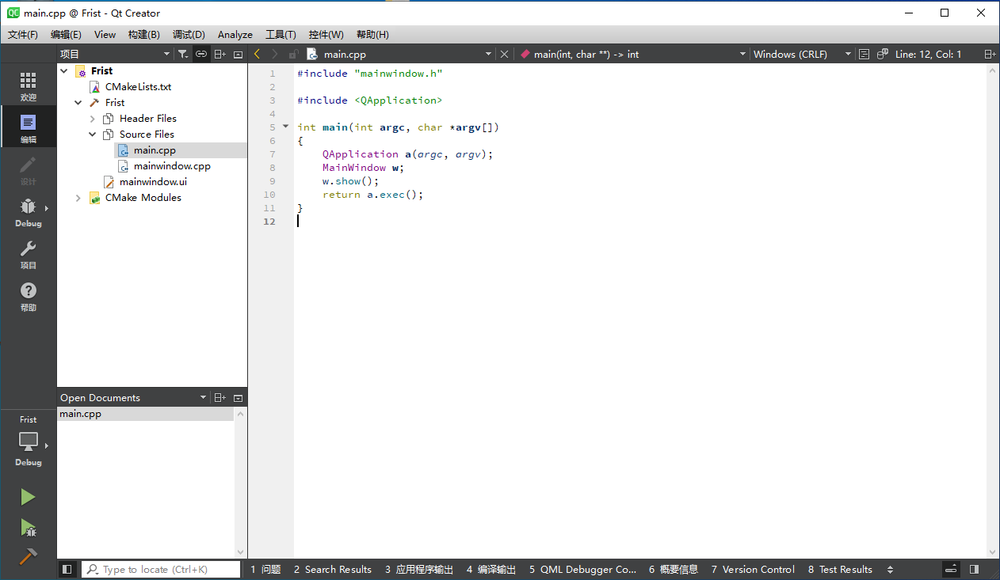
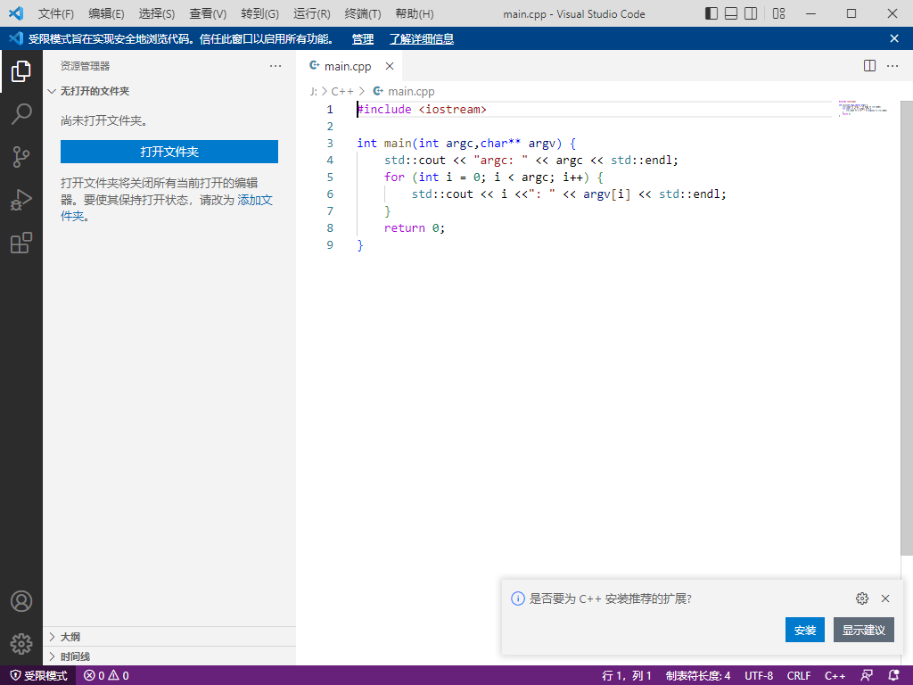
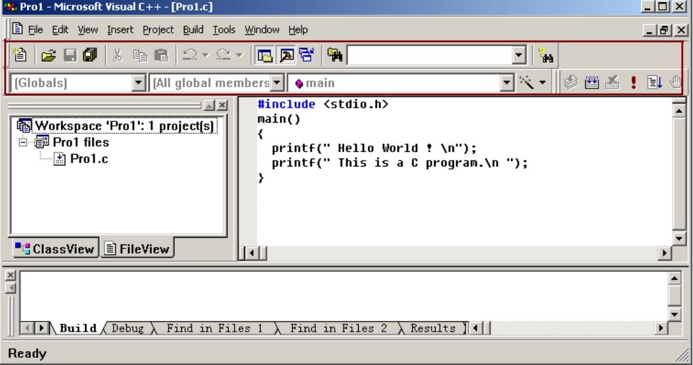

现代开发工作流¶
我本可以忍受黑暗
如果我不曾见过太阳
然而阳光已使我的荒凉
成为更新的荒凉
— Emily Dickinson
人总愿意沉溺在自己的世界中，不求变更
但工欲善其事，必先利其器，变革伴随着风险，但墨守成规终将被淘汰
好的工具链可以大幅提升开发效率，人生苦短，一定得善待自己...
如果下述工具不够 现代，请联系博主及时调整，以免误人子弟...
IDE¶
IDE（Integrated Development Environment 集成开发环境） 是现代程序员接触最频繁的工具，它不仅提供了编译工具，往往还包含：
- 编辑器：用来编写代码，并且给代码着色，以方便阅读
- 代码提示器：输入部分代码，即可提示全部代码，加速代码的编写过程
- 调试器：观察程序的每一个运行步骤，发现程序的逻辑错误
- 项目管理工具：对程序涉及到的所有资源进行管理，包括源文件、图片、视频、第三方库等
- 漂亮的界面：各种按钮、面板、菜单、窗口等控件整齐排布，操作更方便
- 性能探查器
当下主流的C++ IDE有：
- Visual Studio：由微软提供，被很多人尊称为“宇宙第一IDE”，体积庞大，Windows系统下的开发首选。
- Qt Creator：由Qt官方提供的IDE，跨平台，功能上中规中矩，对于Qt程序的开发来说比较友好。

- Clion：JET BRAINS 提供的IDE，代码的辅助功能很巴适，旗下另一IDE — Rider：专门为游戏引擎开发而立。

- XCode：Mac系统下的IDE

- Visual Studio Code：微软提供的跨平台代码编辑器，通过扩展插件可以使得它一样能进行程序编译。

对于笔者而言，早期刷题也是被学校强制使用DevC++，VC6.0，当时还用的乐此不疲，现在回头一看确实感觉有些不堪~

笔者的IDE之前经历了以下几个阶段：
VC6.0 > Dev c++ > Visual Studio > IDEA(Java) > Qt Creator
目前，笔者在 Windows 下用 Visual Studio 编写 C++代码， Visual Studio Code 处理一些常见的文本文件，如Lua，Python、GLSL...
Visual Studio Code 毫无疑问的最好的文本编辑器（拥有非常非常多的插件），而C++的IDE其实都大差不大，该有的功能基本都有，笔者使用Visual Studio做C++开发，主要是因为UI好看以及汉化完整...
Visual Studio¶
请务必查阅官方文档：https://docs.microsoft.com/en-us/visualstudio/windows

常用插件¶
-
VAssistX：提供了大量的辅助功能，提升编码效率，请务必查阅：https://www.wholetomato.com/features
-
CodeMaid：用于代码的整理与简化，提供一些编辑功能
-
Qt VS Tools：Qt的Vs插件，可在配置中开启按F1打开对应代码的Qt文档
常用快捷键¶
-
代码编辑
-
剪切/复制/粘贴：
Ctrl+X/Ctrl+C/Ctrl+V -
代码注释/取消：
Ctrl+K+Ctrl+C/Ctrl+K+Ctrl+U-
创建新行
-
下方：
Ctrl+Shift+Enter - 上方：
Ctrl+Enter - 复制本行并粘贴在下方：
Ctrl+D - 撤销/重做：
Ctrl+Z/Ctrl +Y - 大小写转换：
- 转小写：
Ctrl+ U - 转大写：
Ctrl+Shift+U - 触发智能提示：
Ctrl+J或Alt+ → - 触发自动填充：
Alt+Enter - 浏览与检索
-
-
头文件和源文件之间跳转：
Alt+O - 当前文件搜索/替换：
Ctrl+F/Ctrl+H - 全局文件搜索/替换：
Ctrl+Shift+F/Ctrl+Shift+H - 根据文件名搜索并跳转：
Ctrl+1+Ctrl+F（先按Ctrl+数字1，再按Ctrl+F） - 根据行数跳转：
Ctrl+G - 浏览位置 回退/前进：
Alt+←/Alt+→ - 在活动文件中切换：
Ctrl+Tab - 折叠当前代码块/取消：
Ctrl+M+Ctrl+M -
全部代码折叠到定义/取消：
Ctrl+M+Ctrl+O/Ctrl+M+Ctrl+X -
光标跳转
- 行首/行尾：
Home/End - 文件首/文件尾：
Ctrl+Home/Ctrl+End
- 行首/行尾：
-
翻页：
Page Up/Page Down
达成目标¶
- 知道如何安装与更新插件及模块
- 熟练使用单步调试，内存及性能探查工具，了解PDB文件
- 熟练使用各类快捷键
- 了解项目配置中各个参数的意义
- 注意代码文件的编码格式
构建工具¶
上一节中，我们用Visual Studio的CL编译器简单过了一遍C++的编译流程，在实际的工程开发当中，一个工程绝大多数情况下都不会只有一个源文件，这意味着我们要写一大堆编译指令，不过好在我们可以把指令写在 makefile 文件里，如何通过 make 工具进行构建，但这还有一个非常严重的问题：
你一个Windows下的指令，放到 Linux下面，它不认呐~
是的，由于makefile是直接调用操作系统的指令，但各个系统之间的指令却存在差异，这也涌现出了大量的跨平台工程构建工具，比如：
- cmake：当下主流的跨平台构建工具
- qmake：由Qt提供的一个构建工具，目前Qt已全面转向Cmake，qmake已不再维护。
- nmake：Visual Studio的内置工具，负责执行Makefile中描述的编译链接步骤
- xmake：国人编写的基于 Lua 的轻量级跨平台构建工具。
- UBT：Unreal Engine 中基于C#的构建工具
对于大部分C++初学者来说，项目的构建可能大多时候都是直接使用IDE的图形化界面，点击操作按钮来添加源文件，比如Visual Studio：

图形界面在使用起来确实方便，但也存在一些不足：
- 如果连IDE都不支持跨平台，它的工程文件肯定也无法跨平台，这样的话其他平台就编译不了
- 在不同的系统上，会有不同的构建配置，通过图形界面只能进行静态的配置，而不能实现自动化的构建逻辑
- 通过图形界面配置的工程文件，当文件路径或者系统发生变动，可能导致原先的链接丢失
- 库的管理容易混乱，且过于繁琐...
话虽如此，笔者在早期没有使用构建，纯图形界面写工程也照样没什么问题（菜是原罪）
迫使我放弃使用图形界面的主要原因有：
- 需要在程序编译之前，对工程中一些文件做“预处理”再交由C++编译器进行编译（抄袭Qt的Moc：XObject）
- 在程序编译之前，执行一些脚本或指令，比如提前将着色器代码编译为二进制文件
那上面 那么多构建工具该选什么呢？
CMake¶
为什么是CMake呢，它很强大吗？不，这不是主要原因，最根本的原因是：大部分开源群体都使用CMake作为构建工具，使用它你能很方便的引入其他三方库。
很多小伙伴可能会吐槽Cmake难，它的语法像Shit一样，其实难的并不是Cmake，工程的体量上去之后，它的构建逻辑肯定会变复杂，任何构建工具它的主体逻辑都差不多，核心的构建语句就那么几条，多的不过是一些构建选项啊，跨平台配置啊，自动化脚本之类的，搞会一个构建工具，其他简单过一下就懂了。
使用CMake管理工程主要会带来以下几个好处：
- CMake可以生成各个平台IDE的工程文件
- 使用CMake可以编写逻辑代码，完成自动化构建，适配各个平台的构建细节
- 方便管理子工程（库）
- 工程文件具有依赖分析，编译速度极快
对于初学者而言，一般只需要熟悉CMakeGUI的使用和CmakeLists基本语法
CMake GUI¶
CMake GUI是一个 亲切的 图形化界面，可以代替命令行操作
大家安装完Cmake 之后，注意创建一下 CMake GUI的桌面快捷方式

想要构建CMake项目的时候直接打开CMake GUI：
-
将CMakeLists.txt拖到窗口里，设置一下
Where to build the Binaries，构建目录，笔者一般会在源目录后面追加/build -
点击
Configure会出现一个弹窗，选择想要生成的 IDE 工程文件，以及一些命令行参数

-
Finish之后，这个会出现一些可供调整的配置选项，可根据描述进行调整 -
再点击
Generate，将会生成对应IDE的工程文件 -
最后点击
Open Project，就会直接用对应IDE打开工程了
如果后续代码文件结构发生变动，就需要重新在Cmake GUI 中 Generate 一下，不过一般IDE在检测到 CMakeLists内容有变动 的时候会自动触发 Generate
一些IDE可能支持直接打开CMakeList.txt，比如Qt Creator和Visual Studio，对于Visual Studio，笔者更建议使用CMake GUI 的方式，生成 VS 的工程文件（
*.sln）
CMakeList基本语法¶
CMake并不难，不过是原来 【手动添加点击按钮一个源文件的操作 】换成了：
add_executable(${TargetName} *.h *.cpp ...) //创建可执行文件
// add_library(${TargetName} STATIC *.h *.cpp ...) //创建静态库
// add_library(${TargetName} SHARED *.h *.cpp ...) //创建动态库
如果想引入其他库就用：
target_link_libraries(${TargetName} PRIVATE ${LibraryName})
//PRIVATE代表只有${TargetName}可以访问${LibraryName}中的代码
//PUBLIC代表引入${TargetName}的其他库，也可以访问${LibraryName}中的代码
如果想增加Include路径就用：
如果想操作一个局部变量就直接用：
想添加子目录就用（子目录指拥有CMakeLists.txt 的路径）
基础操作无非就这么一些，其他什么跨平台配置呀，自动化构建呀，框架配置什么的，只要你觉得某个配置或者功能是合理的，那么它大概率就存在，网上一搜，官网一查，就出来了，构建文件的改动并不频繁，只需要知道主体逻辑即可
构建工具其实都大差不大，用啥都无所谓，它们的使用都不难，关键难的是各种平台和框架的细节配置，这个无可避免。
关于CMake的使用，网上有很多优质的教程，不过笔者更推荐去阅读它的官方文档：https://cmake.org/cmake/help/latest/guide/tutorial/index.html
版本管理¶
那一天，笔者回忆起了没有版本管理时的恐惧...
笔者早期学习的时候并不了解什么版本管理工具，因为平时就是刷刷题，代码量撑死也就一两百行，写个小工程也不过千行，直到后面工程的体量上去之后，每次做Feature的代码变动都比较大，所以在动工之前，笔者会把源代码复制一份留做备份，以免新增的代码加入一些 “莫名其妙” 、无法修复的错误.
早期这种做法也没遇到什么大问题，直到笔者在某一次写代码写上头了，没有提前备份，大概一个星期的代码变动，非常多，查了一天没找到原因，头都要炸了，后面没办法，只能用之前的备份重新去写，一点一点的加，一点一点的测试，大概花了三天的时间，才修复问题，恢复进度
那三天的时间里，笔者度日如年，看着一行行熟悉的代码，小心翼翼的再来一遍，一度想要放弃，又不断说服自己耐着性子坚持下去...
可即便如此，笔者也还是不愿意浪费时间去了解新东西，而是把那些时间花在 堆 代码上
直到后来，笔者遇到一位老大哥，耐着性子的去点出我工程中的瑕疵，流程中的不规范，苦口婆心的给我介绍 Git ，我也终于是 被 他 打动 了 ，决定去用下，这一用就用到了现在，如果让现在的笔者去评价原来的自己，那只有两个字 — 傻X
Git¶
Git是一个开源的分布式版本控制系统，可以有效、高速地处理从很小到非常大的项目版本管理。
如果你成功安装的话，能在右键菜单中看到：
很多程序员喜欢在 Git Bash 上写命令行代码，但对笔者而言，无疑增加了很多的记忆负担，因此笔者更喜欢使用Git的图形界面：
Tortoise Git¶
虽然一些IDE也支持Git，但功能并没有Tortoise Git那么强大
读者在安装的时候注意安装中文的语言包
使用 Git & Tortoise Git 能带来以下好处：
- 可以一点一点的提交代码，在日志上可以直观地对比版本间的修改记录
- 可以方便的对比文件变更
- 可以还原文件，回退版本来追溯问题
- 可以追溯单个文件完整的提交信息
- 多人协作的时候可以合并代码
- 可以在分支上进行各种feature的尝试
- ...
关于Git 和 Git Tortoise 教程，笔者看过的一些教程都不是很好，读者可以在一些平台上搜索，自己多尝试，并不难.
小贴士
Tortoise Git根目录下有一个TortoiseGitProc的程序可以用来监控仓库的变更，定时的去检测仓库的变更，如果有人提交代，就会弹出一个系统通知

Github、Gitlab、Gitee¶
在一个Git仓库，包含了一个隐藏的.git文件夹，它里面存储了git的各种数据：
这个仓库是位于本地的，很多时候，我们可能希望它能存储到服务器上面，这样才方便于他人共享，目前，几个主流的 Git代码托管平台 如下
- Github：https://github.com/
- Gitlab：https://about.gitlab.com/
- Gitee：https://gitee.com/
具体选用什么平台，可以参考：知乎 爆测一周！22年必看最细致代码托管工具测评
版本管理除了Git，还有老牌的SVN，当然一些公司内部也有自己的版本管理工具
提交规范¶
好的提交规范可以让你的日志看上去更直观，比如笔者不同时期的提交记录：
关于提交规范，笔者建议阅读这篇文章：
SVN¶
SVN是subversion的缩写，是一个开放源代码的版本控制系统，通过采用分支管理系统的高效管理，简而言之就是用于多个人共同开发同一个项目，实现共享资源，实现最终集中式的管理。
相比Git，SVN虽然显得非常古老，但由于其管理方便，很多公司依旧还在使用它
Tortoise也有提供对SVN的支持：
文档笔记¶
俗话说好记性不如烂笔头，人的大脑就像电脑的CPU，内存的速度很快，但容量有限，聪明的人懂得将大量内容存储到"磁盘”（笔记）上，而将内容的索引存放到高速的”内存“（大脑）中，记笔记主要能带来几个好处：
- 记的时候加深印象
- 回顾的时候快速联想细节
那怎么记笔记呢？
笔者目前见到过的记笔记的方式主要有：
- 办公软件：Word、Excel
- 博客网站：知乎、博客园、CSDN、掘金、简书、哔哩哔哩、自己搭建的博客网站...
- 笔记类软件：如印象笔记
笔者早期在CSDN上记录一些解题思路的博客，如果没有那个好大哥苦心孤诣地给我介绍Github、Markdown、CMake，可能现在依旧沉溺在自己的世界中继续跟自己斗智斗勇...
Markdown¶
Markdown 是一种轻量级标记语言，创始人为约翰·格鲁伯（John Gruber）。 它允许人们使用易读易写的纯文本格式编写文档，然后转换成有效的 XHTML（或者HTML）文档。这种语言吸收了很多在电子邮件中已有的纯文本标记的特性。
为什么要用Markdown呢？
笔者的博客都是使用Markdown编写的，一直使用下来的感受是：
- 编写速度快 ：熟悉Markdown语法之后，文档的编写速度很快
- 操作简单，认知负担小 ：限制了一些"不合理"的功能，保证文档的逻辑是线性的，用它写文档感觉就是一种享受。不像思维导图一样，自己写的是爽了，别人可能看了一脸懵...
- 通用 ：很多网站都提供了Markdown的支持，因为它本质上只是纯文本，其他网站可以解析它的语法，来进行预览，还因为是文本的缘故，使得文档的版本管理也很方便
- 美观 ：markdown只记录了文档的结构，有很多漂亮的第三方皮肤主题
那用什么写Markdown呢？
Markdown编辑器很多，一些博客网站就直接支持，对于本地，笔者见过较多的是使用VS Code，还有就是狂拽酷炫，天下无敌，宇宙第一的Markdown神器：
Typora¶
可惜的是Typora现在开始收费了，不过免费版用户还可以使用单个Typora窗口，够用了
关于Markdown的语法，这里有一个完整的文档：
Typora的完整文档目录如下：
关于读者可能容易忽略但却很有用的两个功能：
-
Typora还支持图表 mermaid ：https://support.typora.io/Draw-Diagrams-With-Markdown/
-
为Typora设置好图片处理方式，搭建 图床 ，可以让你的工作变得非常流程：https://support.typoraio.cn/Images/
Markdown作为开源行业的主要文档形式，很多公司的内部文档，也比较喜欢使用Markdown搭建的Wiki，你用上了你就知道有多香了
虽然Markdown是很强，但它毕竟只是处理单个文件的文档，不能很好的组织文档间的关联关系，这个时候就需要其他工具了：
文档组织¶
对笔者而言，一个Typora已经够用了，网络上推荐比较多的是：
- Notion
- Obsidian
- Remnote
具体的选择，大家可以看下这里知乎上提问：你在 Notion、Obsidian、Remnote 等之间做出什么选择，为什么这么选？
目前笔者的文档流程是：
- 通过Typora编写Markdown文件，通过文件夹分类来组织md文件，并将其托管到**Github**上
- 使用Mkdocs（也有小伙伴用Gitbook），将文档生成静态网站，并部署到 Github Pages 上
笔者强烈推荐Mkdocs的这个主题：https://squidfunk.github.io/mkdocs-material/getting-started/
Mkdocs可以简单配置一下yml就能将自己的markdown文件组织成一个精美的网站，托管到Github上，现在笔者每次提交文档到Github上，会 自动 执行Github Action，将我的文档变更重新部署到 Github Pages上
这是本系列文章的网站：
项目管理¶
各个企业有自己偏好的项目管理工具
一些企业可能使用飞书、钉钉、企业微信的功能就足够了
公司一般会使用一些提单平台，比如Jira、禅道、Redmine、PingCode...
还有一些CI /CD平台，如Jenkins、Github Action、GitLab CI、 CODING CI...
这里笔者主要是为了推荐大家使用 Trello
Trello¶
Trello 等任务管理工具体验如何？ - 唐十一的回答 - 知乎 https://www.zhihu.com/question/20339647/answer/139279285
其他¶
-
Listary：https://www.listary.com/
-
LICEcap：https://www.anopos.com/licecap/
-
阿里巴巴矢量图标库：https://www.iconfont.cn/
-
QQ截屏、录屏